Argomenti:
per qualsiasi cosa andare a: Cap9-logica
ci sono due tipi di circuiti
Combinatori:
Circuiti in cui semplicemente, dipende da
Sequenziali:
Circuiti dove, dipende da oppure dai vari che può avere il circuito
latch s-r
hanno una uscita retro-azionata
- set: settarlo che vale 1
- reset: resettarlo a 0 q è lo stato in cui il latch può esistere vedi appunti di logica:
se S cambia q negata diventa 0 e q diventa 1 se R diventa 1 S cambierà altrimenti non cambia mai se sia s che r sono 1 diventa non deterministico
SR-Latch clocked
è un sr latch che sfrutta il clock che ti permette di sincronizzare i circuiti
D-latch
risolve l’ambiguità del set reset, diventa deterministico non può più esserci 1 e 1 insieme perché una è la negata dell’altra
Clock:
Clock è un oggetto che genera un segnale alto o basso(impulso) come ogni circuito è soggetto a una latenza perché quando un segnale è cambiato da una porta ci vuole un tempo fisico che è al millisecondo ma comunque c’è una latenza (tempo di refresh 5ms)
Flip-Flop
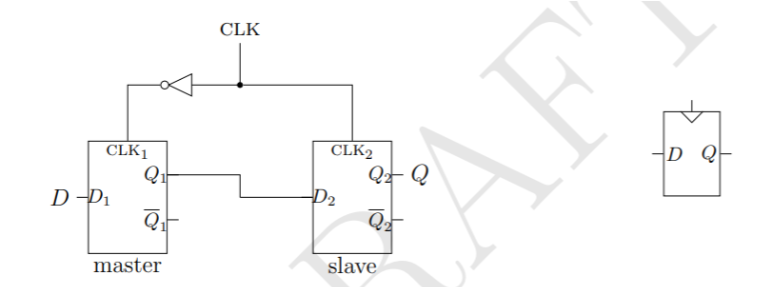 è un evoluzione del D-latch Cap9-logica possiamo rappresentarlo con una onda quadra che segna 0 o 1(idealmente): 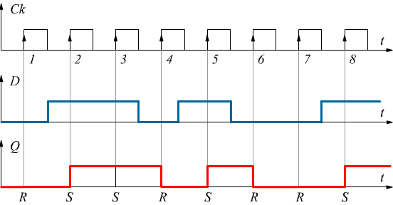 lo stato del flip flop cambia durante la transizione del segnale in 2 modi:
- fronte in salita: da 0 a 1
- fronte in discesa: da 1 a 0 Nel flip-flop ci sono preset e clear che servono per forzare lo stato 1 o 0 la transizione del dato avviene quando si ha un (level triggered) ovvero quando il segnale di clock è alto e il master diventa 0 e lo slave diventa 1 Si dice edge triggered perché può reagire sia in un fronte in salita che un fronte in discesa
Generatore di impulsi(clock):
si collega ad esempio al flip-flop e serve per dare un clock che vada a un determinato periodo di oscillazione tra 0 e 1 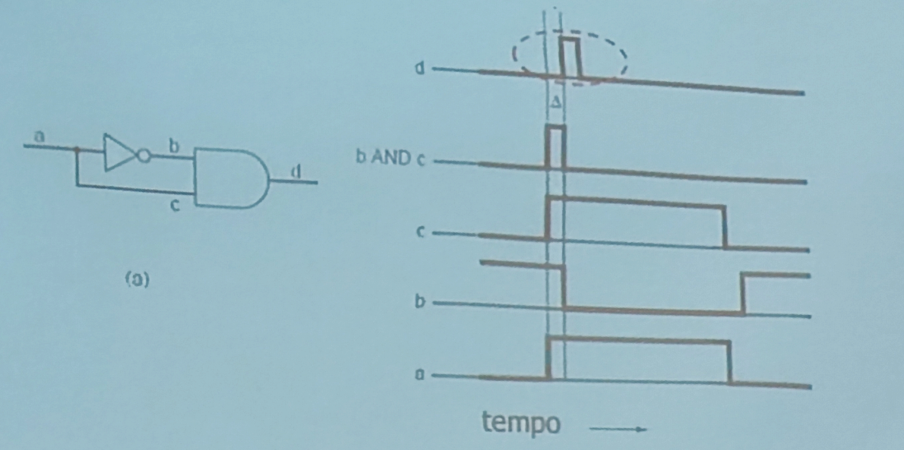 sfruttando la porta not e la porta and ti permette di generare periodicamente lo stesso dato a un determinato lasso di tempo
- a è l’input
- b è la negazione dell’input ma ci mette un po’ di tempo quando ci sono dei cambiamenti a cambiare
- c è uguale ad a
- d prende il ritardo di c and b
Organizzazione della memoria
I flip-flop memorizzano 1 bit se ne metto 8 insieme formano 1 byte da poter memorizzare 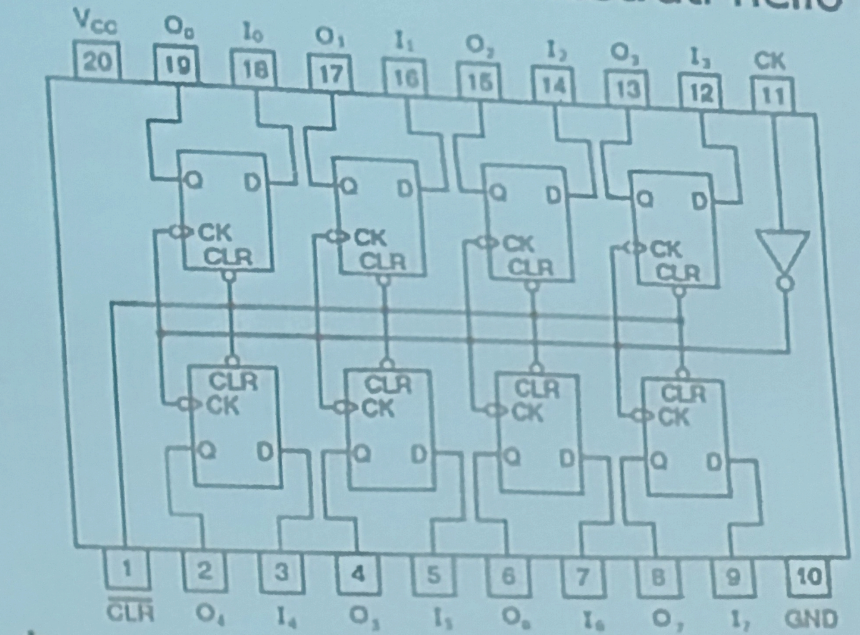
Le celle di memoria:
Ogni cella ha un suo indirizzo soprattutto su memorie di grandi dimensioni. Su ogni cella possiamo eseguire operazioni di scrittura o lettura. esempio di cella a 12 bit: 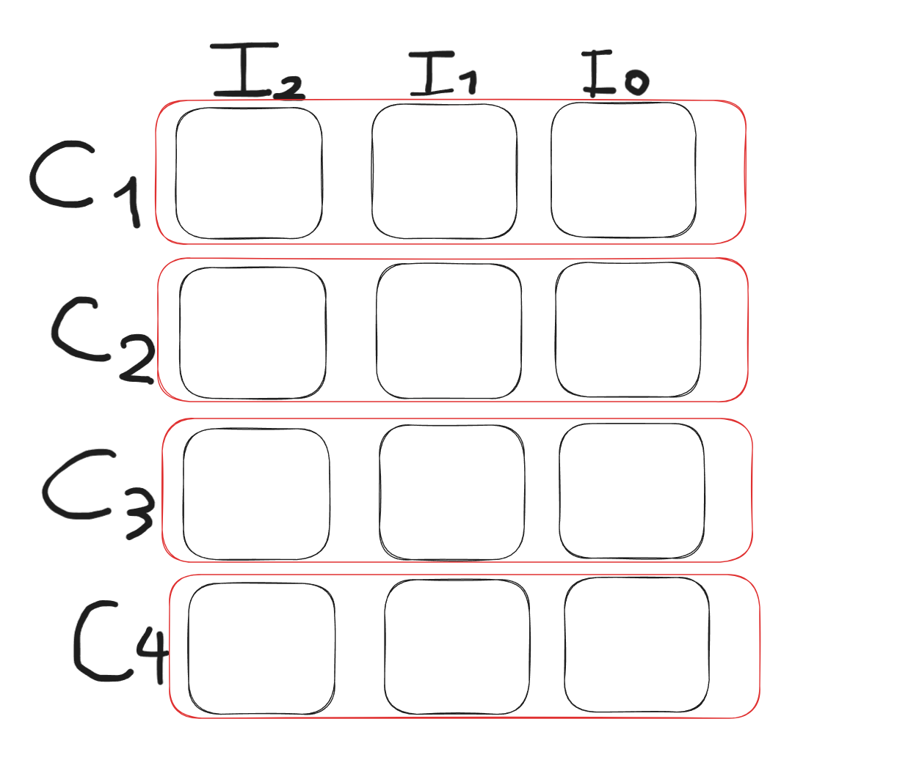
tu hai una memoria a 12 bit costituita da 4 celle ciascuna memorizza una parola a 3 bit poi ci sono le rispettive uscite dei 3 input
- Cs: Selezioni il chip cosa è? chiedi al tutor
- indirizzi: il circuito seguente usa 2 bit per selezionare la cella(00,01,10,11) per selezionarlo usa il multiplexer
- OE: output enable serve per abilitare o meno(bho)
- ReaD: se è 0 abilita la scrittura se è 1 abilita la lettura(bho) 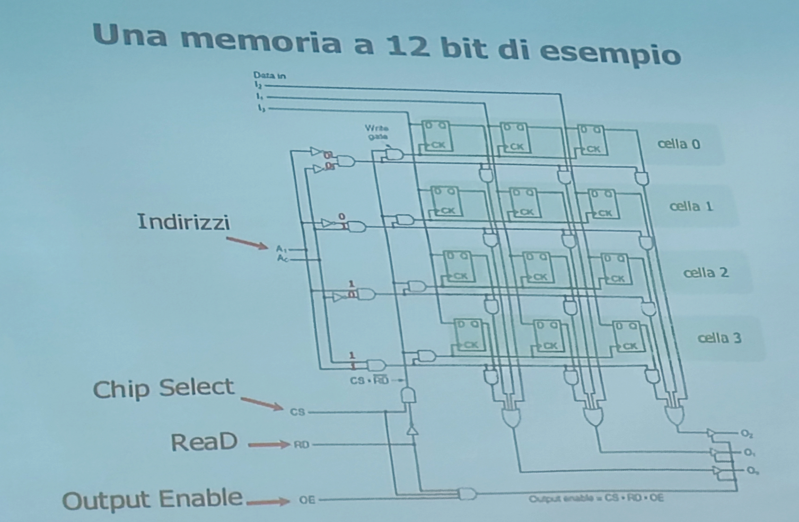
Come connettere più uscite insieme?
Se le metti in un unico filo si crea un corto circuito quindi sfruttiamo open collector o il buffer three state
OPEN COLLECTOR:**
C’è una resistenza di pull-up che agisce come una porta or e che se almeno uno dei due input ha tensione bassa allora l’output darà L(low)
BUFFER THREE STATE:**
ha uno stato in più dei normali 0 e 1 ovvero quando hai una resistenza che è al massimo della sua resistività e impedenza 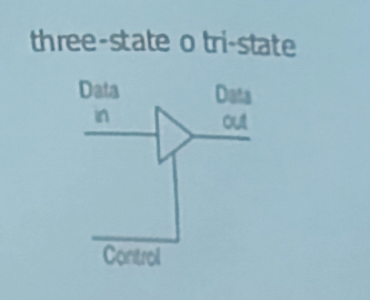 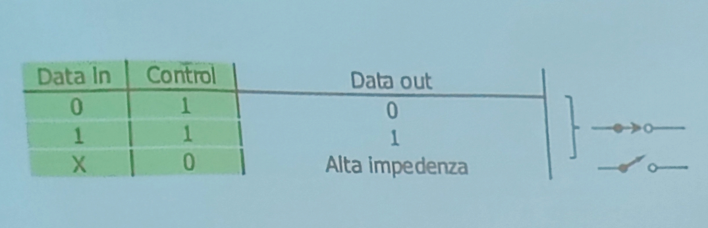
Chip di memoria
i chip di memoria sono dei circuiti che memorizzano seguendo la logica seguita in precedenza e sono riusabili e espandibili. a volte ragionano con logica positiva oppure al contrario con logica negativa i chip di memoria hanno dei segnali di controllo:
- CS chip select permette di selezionare il chip da attivare**
- WE write enable dice se deve leggere o scrivere**
- OE output enable fonde insieme i segnali di uscita**
esempio di memoria di tipo
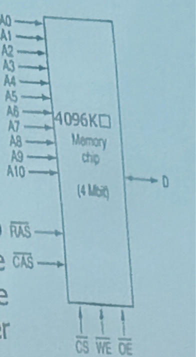
- D serve per specificare l’operazione che vogliamo fare lettura/scrittura Specificare se vi state riferendo a una determinata riga e colonna mettendo true a RAS oppure a CAS
- RAS(row address strobe)
- CAS(column address strobe) è più lenta perché serve specificare riga e poi colonna, ma richiede meno pin rispetto a una memoria sequenziale
memoria volatile
RAM
ci sono due tipi di RAM:
- statiche: tengono l’informazione finché sono alimentate, vengono caricate prima dell’esecuzione di un programma e funzionano tipo un flip-flop
- dinamiche: le dinamiche sono più complesse usano un condensatore che si carica o scarica elettricamente, esso nel tempo perde la sua carica e quindi ciclicamente bisogna refresharlo, viene caricato anche nel mentre dell’esecuzione del programma, sono meno costose ma più lente e possono essere:
- DRAM FPM (fast page mode)
- SDRAM un ibrido tra statico e dinamico
- SDRAM DDR(double data rate)raddoppia il tasso di trasferimento della SDRAM
memoria non volatile
ROM(Read Only Memory):
sono memorie a sola lettura il cui contenuto non cambia e non sono volatili
PROM:
memoria rom programmabile bruciando dei piccoli fusibili che fanno parte di un array che fa parte di una serie di righe e colonne.
EPROM:
sono anche cancellabili attraverso una luce ultravioletta che li mette tutti a 1
EEPROM:
funziona come la EPROM. ma per modificarla basta un impulso elettrico
MEMORIA FALSH:
É come la EEPROM ma la memoria flash è cancellabile a blocchi e riscrivibile.
Chip della CPU
il modo in cui comunica all’esterno è attraverso i segnali e i pin ci sono 3 tipi di chip:
- indirizzi
- dati
- controllo i pin della CPU sono connessi agli altri componenti con i 3 bus ci sono 3 bus:
- controllo
- indirizzo
- dati
i passaggi della CPU:
- mette sul bus indirizzi l’indirizzo dell’istruzione
- usa il bus di controllo per dire che vuole eseguire una lettura alla memoria
- la memoria risponde con la parola e con un segnale positivo che dice che l’operazione è andata bene
- la CPU riceve il segnale di controllo e si prepara per eseguire l’istruzione
vedere fetch decode excecute
I PIN della CPU
i pin di indirizzamento e dei dati ci permettono di caprie se una CPU è performante oppure no
- con n pin dati può leggere n-bit x clock
- con m pin indirizzi può indirizzare fino a indirizzi I pin di controllo possono essere raggruppati in diverse categorie:
- interrupt: momento di fermo di tutti i processi per dare priorità a determinati processi come quelli di lettura e scrittura
- controllo del bus: controlla i segnali del bus selezionando le componenti
- arbitraggio: specifica il tipo di segnale e serve per regolare il traffico del bus con priorità
- coprocessore: semplifica le operazioni che dovrebbe fare la CPU
- i pin di stato: inviano o ricevono informazioni di stato
- altri pin servono per altre funzioni generiche 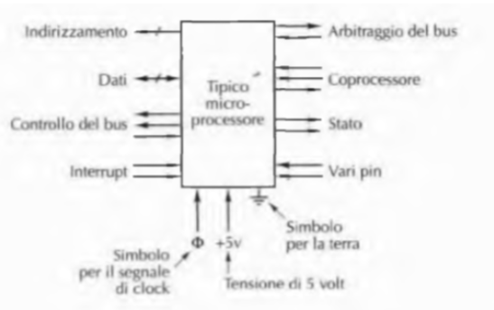
Bus del calcolatore
quando si parla di dispositivi del calcolatore alcuni si dicono attivi e altri passivi:
- attivi o master, inviano le informazioni nel bus, hanno un bus driver per inviare il segnale
- passivi o slave, attendono le informazioni dal bus, hanno un bus receiver collegarsi con il bus questi per evitare corti circuito nel bus usano il sistema buffer tri-state oppure il wired OR
Ampiezza del bus
il bus ha una determinata ampiezza questo significa che in un ciclo di clock posso passare determinate locazioni di memoria che vanno a , incremento dell’ampiezza del bus di indirizzi porta un aumento delle informazioni ma anche un aumento dei costi, fili e connettori
Larghezza di banda del bus
per aumentare la larghezza di banda del bus si può:
- ridurre il numero di operazioni in un ciclo di clock
- problemi di retrocompatibilità
- problemi di disallineamento(dispositivi che vanno a velocità differenti)
- incrementare ampiezza del bus dati
- può causare un rallentamento del sistema
Temporizzazione del bus
- bus sincroni: le attività del bus vengono scandite da un suo ciclo detto ciclo di bus dove ogni operazione richiede cicli di clock
cosa fa la CPU che vuole leggere da memoria?
- La CPU(master) pone l’indirizzo di memoria sull’address bus
- Le linee di indirizzo si stabilizzano su nuovi valori(DATA) e MREQ si asserisce dicendo che la richiesta di memoria è disponibile per fare operazioni di scrittura e lettura e RD cambia per specificare se bisogna fare lettura e scrittura
- se la memoria impiega troppo tempo per rispondere asserisce WAIT per fargli fare altre cose nel frattempo
- appena la memoria è pronta toglie WAIT
- la CPU legge i dati memorizzandoli in un registro
- una volta finito nega MREQ e RD
è importante che i dati vengano messi sul bus prima che la CPU le legga 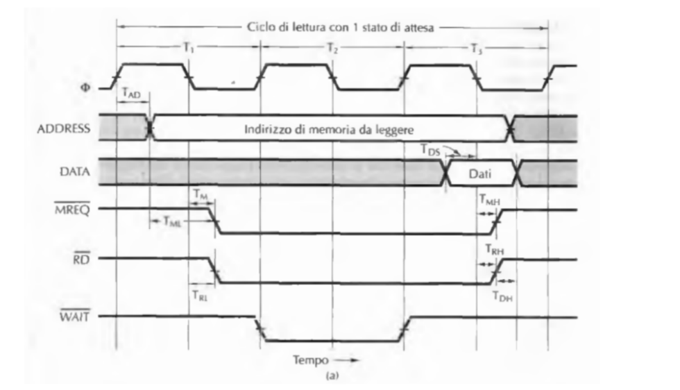
- bus asincrono: si manifesta un handshake tra master e slave senza tenere conto dei tempi, il bus si adatta a seconda delle velocità dei dispositivi ma è più difficile da costruire
esempio e informazioni del bus asincrono
ogni operazione mette il tempo che gli serve e quando inizia MSYN si asserisce e quando finisce si nega SSYN
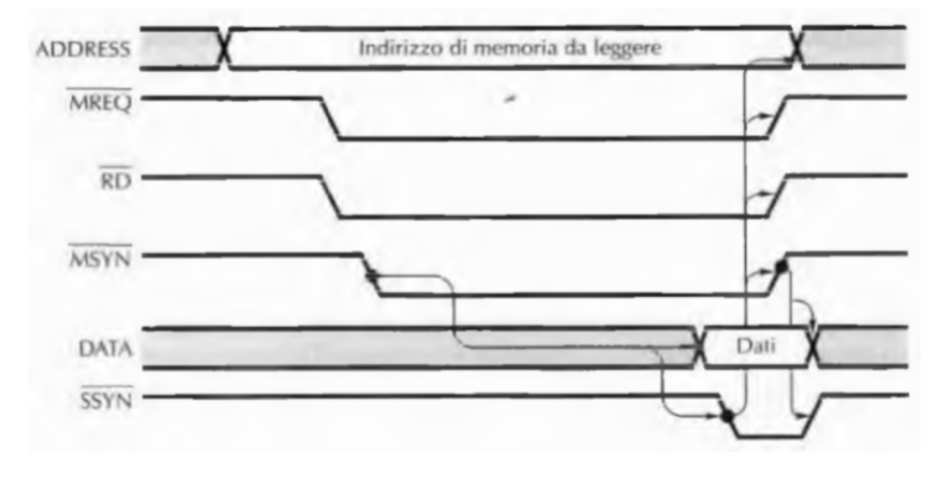
Arbitraggio del bus
Se più dispositivi vogliono utilizzare il bus abbiamo bisogno di un arbitro che le regolamenti dando diverse priorità ad ognuno.
Noi abbiamo questa grande autostrada ma deve essere regolamentata e gestita.
l’arbitro può essere decentralizzato o centralizzato.
Centralizzato
- l’arbitro centralizzato è integrato nel chip della CPU oppure è separato, il problema è che se si rompe è un macello
- Il bus contiene una unica linea di richiesta or cablata(+input che convergono in un or)
- dà priorità a quelli più vicini all’arbitro(collegamento a festone)
- un altro tipo è a due livelli, dando priorità, una componente fa richiesta a una delle priorità e viene accettata o meno 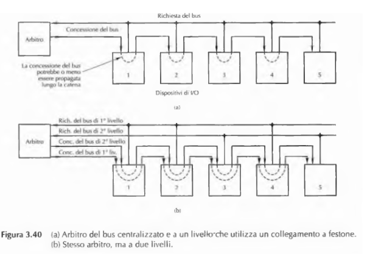
- Il bus contiene una unica linea di richiesta or cablata(+input che convergono in un or)
decentralizzato:
In quello decentralizzato non c’è un arbitro e ogni dispositivo ha una sua priorità ha più linee di richiesta ciascuna ha assegnata una priorità. I componenti comunicano tra di loro per sincronizzarsi e spartirsi il bus Malus: tot dispositivi per tot livelli ci sono tre linee:
- richiesta del bus
- busy
- arbitraggio che serve per dare le informazioni per far sincronizzare i componenti il bus deve essere inattivo asserendo la variabile IN, se IN è negata allora significa che la componente non può diventare master negando la sua OUT(della componente)
ESEMPIO
Se la prima componente trova IN asserito allora procede a fare quello che deve fare, mettendo OUT negata così che le componenti successive trovano la in negata e non asserita
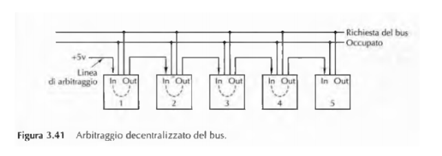
Dalle
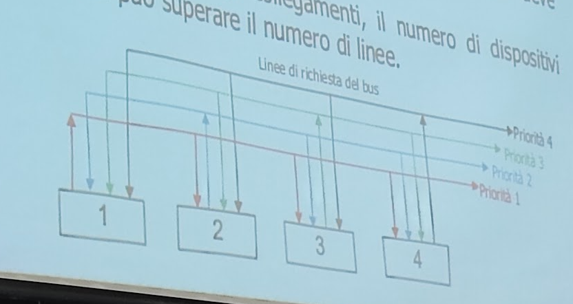
Operazioni del bus
A volte può essere utile trasferire più parole in un unico trasferimento. All’inizio della lettura del blocco il master del bus comunica allo slave quante parole deve trasferire in un lasso di tempo Lo slave restituisce l’esatto numero di parole anche se ci mette cose a caso BLOCK, viene asserito per indicare che è stato richiesto il trasferimento di un blocco. 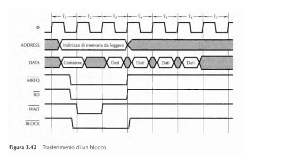
Interrupt Handling
È un segnale di interruzione che la CPU riceve una volta che un dispositivo ha finito La CPU aspetta l’interrupt(da una richiesta che ha fatto ad una componente) e nel frattempo fa altro(il pepe) per evitare 1 miliardo di interrupt contemporanei ci sarà un arbitro che li gestisce
8259A
è un esempio di un controllore degli interrupt ci puoi collegare fino a 8 controllori quando uno o più interrupt sono asseriti la variabile INT asserisce e asserisce anche il pin di interrupt sulla CPU la CPU successivamente quando è pronta per gestire la interrupt invia un impulso su INTA confermando che è pronta, successivamente l’8259A dirà alla COU quale dispositivo ha causato questa interrupt attraverso un ciclo di bus speciale. La CPU ha questo vettore con scritti tutti i dispositivi e così capisce chi è stato a causare l’interrupt. L’8259A ha al suo interno vari registri che la CPU può leggere e scrivere utilizzando i cicli di bus ordinari e i pin RD (ReaD), WR (WRite), CS (Chip Select) e A0(indirizzo della cella). una volta che la CPU ha finito quello che doveva finire scrive un codice speciale nel registro che fa negare INT così che sia pronto a futuri interrupt 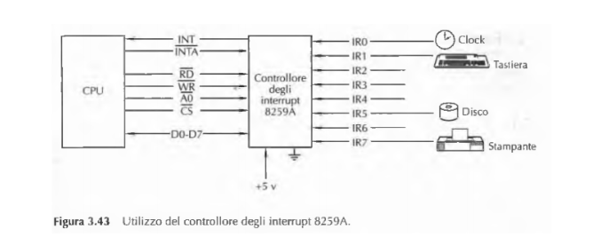